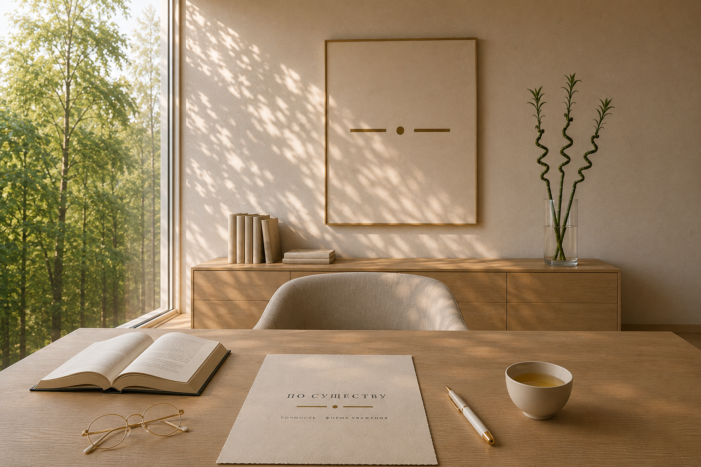
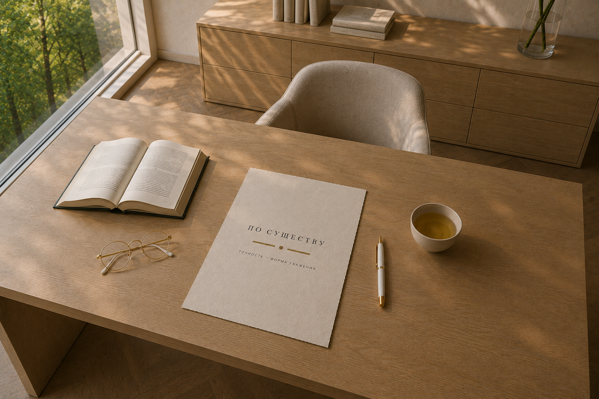
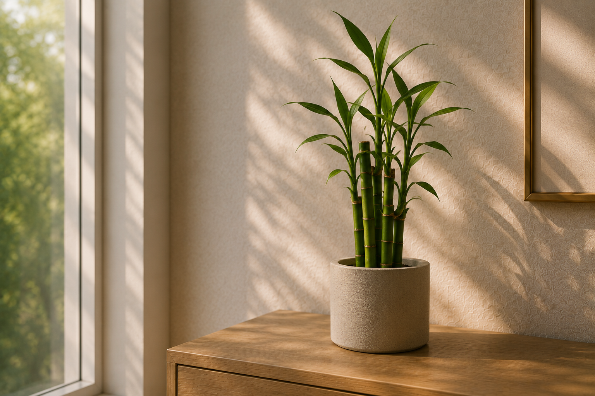
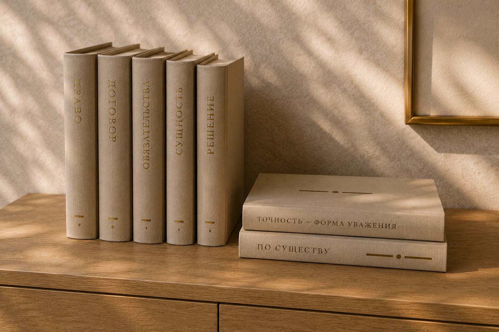
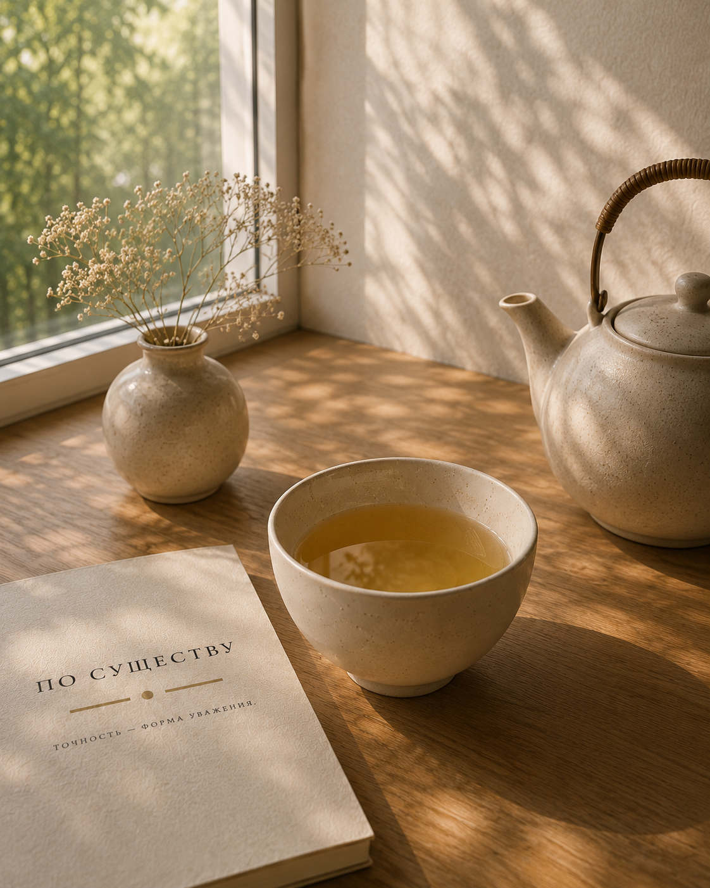
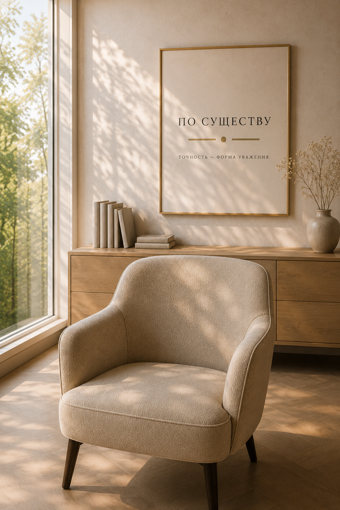

Вам не нужно заранее знать,
какие обстоятельства имеют
юридическое значение.
Просто расскажите о своей
ситуации так, как помните.
Если потребуется —
я задам уточняющие вопросы.

Философия
Убрать лишнее.
Разобраться в обстоятельствах.
Объяснить сложное понятным языком.
Найти решение, которое подходит именно вашей ситуации.
Примерный план работы
Последовательность и объём работы зависят от обстоятельств вашего дела.

Подход к работе
За каждым изменением стоят новые подходы к решению привычных вопросов.
Новые судебные позиции, изменения законодательства и развитие юридической практики требуют постоянного внимания.
Именно поэтому профессиональное развитие для меня — не отдельная задача, а часть ежедневной работы.

Спокойный разговор
За чашкой чая проще говорить о сложном.
Когда эмоции отходят на второй план, появляется возможность увидеть ситуацию такой, какая она есть.
Сначала мы спокойно обсудим произошедшее, отделим главное от второстепенного и только затем определим возможные дальнейшие действия.

По существу
Если вам близка философия «По существу», оставьте контактные данные.
Я свяжусь с вами лично, чтобы обсудить ваш вопрос и договориться о времени консультации.
Чай или кофе — на ваш выбор. Спокойный разговор — обязательно.